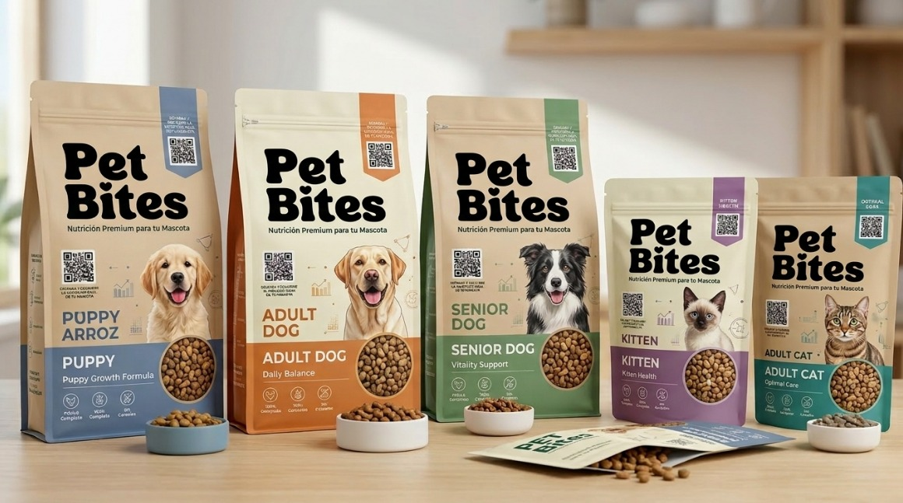

Lo mejor para tu mascota, lo más fácil para ti
Diseñamos planes nutricionales personalizados para perros y gatos, basados en sus necesidades únicas. Acompañamos a dueños en un cuidado responsable, consciente y preventivo.

Plan Personalizado
Cada mascota es única. Su nutrición también debería serlo.
¿Cómo funciona?
En 4 pasos tu mascota tendrá un plan nutricional diseñado especialmente para ella.
Regístrate
Crea tu cuenta y registra a tu mascota con sus datos básicos.
Evaluación
Analizamos el perfil completo de tu mascota: raza, edad, peso y condición.
Plan Nutricional
Recibe un plan alimenticio personalizado con cantidades y horarios.
Seguimiento
Retroalimentación continua para ajustar y optimizar la alimentación.
Todo lo que tu mascota necesita
Ofrecemos un ecosistema completo de bienestar y nutrición para tu compañero.
Plan Nutricional Personalizado
Diseñamos una dieta científicamente balanceada adaptada al perfil único de tu mascota: especie, raza, edad, peso, condición de salud y nivel de actividad.
Retroalimentación Continua
El dueño de PET Bites hace seguimiento personalizado de cómo se está alimentando tu mascota y brinda ajustes y recomendaciones en tiempo real.
Suplementación Guiada
Es un enfoque personalizado para elegir suplementos naturales y propiedades adecuadas ademas de el sellado al vacío , con el objetivo de mejorar su energía, pelaje, digestión y longevidad, según sus necesidades específicas.
Asesoría por WhatsApp
Comunicación directa y rápida. Resolvemos todas tus dudas sobre la alimentación de tu mascota a través de WhatsApp cuando lo necesites.
Membresía Premium
Accede a beneficios exclusivos, seguimiento prioritario, descuentos y mucho más con nuestros planes de membresía pensados para dueños comprometidos.
Cuidado Preventivo
Prevención activa de enfermedades relacionadas con la nutrición. Ayudamos a tu mascota a vivir más años con mayor vitalidad y bienestar.
Mascotas felices, dueños tranquilos
"Desde el primer día, la atención al cliente de PET Bites fue excepcional. Respondieron todas mis dudas de inmediato y el plan adaptado para Max ha sido una maravilla."
"El nivel de personalización de PET Bites no tiene comparación. La rapidez y empatía del equipo por WhatsApp me da muchísima tranquilidad sobre la salud de Luna."
"Lo que más destaco de PET Bites, además de la calidad de su nutrición, es el trato humano y especializado. Siempre están dispuestos a guiarme paso a paso con mi mascota."
Únete a la membresía PET Bites
Fideliza el cuidado de tu mascota con beneficios exclusivos, seguimiento prioritario y mucho más.
Ver planes de membresía →